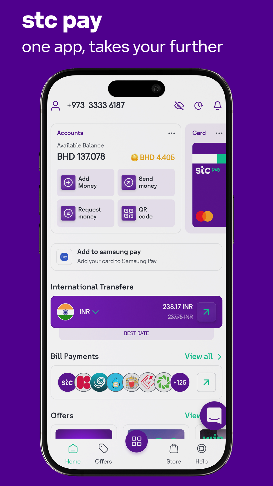

STC Pay KW (Kuwait)
Developed a high-scale, multi-modular fintech mobile wallet with international & local transfers, financial card management, and cashbacks. Built a custom STC Pay UI Kit for reusable components and rapid feature rollout. Implemented advanced identity verification with PACI & Iproov, ensuring bank-grade security using Android Keystore, AES & RSA encryption, and TLS Pinning.

STC Pay BH (Bahrain)
Engineered a modular fintech mobile wallet for Bahrain, delivering a feature-rich multi-lingual experience with seamless LTR/RTL support. Integrated advanced modules including remittance, financial card management (Samsung/Google Pay), and split-money features. Designed a Web-Driven UI and custom components to ensure rapid rollout of production-ready solutions.

Kuraimi Islamic Bank (KiB)
Developed the official Islamic mobile banking app, enabling multi-currency transfers, Sharia-compliant financial products, and dynamic dashboards. Implemented financial-grade security, including NDK hardening, AES/RSA encryption, and TLS certificate pinning. Built with modern Jetpack Compose UI and MVI architecture for scalable, production-ready performance.

Kuraimi Jawwal (KJ)
Developed a high-scale banking app achieving 1M+ downloads and 138K+ reviews, designed for nationwide accessibility in Yemen. Delivered secure features such as Kuraimi Express transfers, high-limit transactions, and multi-currency deposits. Collaborated closely with backend and QA teams to ensure reliability for high-volume financial transactions.

mFloos - Agents
Empowered authorized agents across Yemen to provide financial services, remittance payouts, and merchant support via a modern Jetpack Compose UI. Enhanced the app with offline and SMS-based functionality to ensure operations in low-connectivity regions. Agents manage deposits, withdrawals, and humanitarian contributions while earning revenue per transaction.

mFloos - Customers
Enhanced Yemen’s first eWallet, providing secure transfers, remittances, and merchant payments via Haseb POS. Migrated the entire UI from XML to Jetpack Compose for improved maintainability and performance. Strengthened security with Keystore encryption, SSL pinning, and 2FA while providing offline support for nationwide financial inclusion.

Stockify – PSX Analytics
Engineered an Android application for real-time Pakistan Stock Exchange tracking, trend analysis, and portfolio management. Integrated JSoup for market data parsing and Room Database for offline support and data persistence. Enabled investors to make data-driven decisions with personalized watchlists and historical trend analysis modules.

SparkEd - Urdu Vocabulary
Developed an interactive Urdu learning application for English users in collaboration with LUMS. Organized into collections of daily life words, the app makes learning fun through icons, voice synthesis, and bilingual text. Designed specifically for children to understand and remember new words through visual and auditory feedback loops.

Migraine Relief (MIT & Harvard)
Collaborated with MIT and Harvard School of Medicine to build a diagnosis system for migraine circumvent. Responsible for collecting physiological, environmental, and behavioral data using wearable devices and mobile sensors. Developed a system that predicts migraine risks and identifies relevant factors to help patients avoid triggers.

RAWAAN APP
Designed and developed a gamified learning application specifically tailored for children with Dyslexia. Focused on phonological awareness and reading fluency through interactive games and specialized visual feedback. The application provides a supportive, stress-free environment to improve literacy skills using evidence-based pedagogical strategies.

HUMQADAM - GBV Response
Developed a response services platform for Gender-Based Violence (GBV) survivors. The application provides immediate access to emergency help, legal guidance, and community resources. I ensured the highest level of data privacy and discreet UI patterns to protect user safety while providing critical social impact services.

EAST APP (Mitsubishi Foundation)
A regional development and tourism platform funded by the Mitsubishi Foundation. Focused on promoting local heritage and supporting community-based tourism through digital maps and verified site data. The app serves as a bridge between travelers and local service providers to boost the regional economy through digital inclusion.

BOL - Communication Aid
A specialized communication application built for individuals with speech and non-verbal communication issues. Developed an intuitive icon-to-speech interface that allows users to express complex thoughts and needs easily. The app focuses on accessibility standards to ensure a smooth user experience for people with motor and cognitive impairments.

Smart Meter IoT
An IoT-integrated utility application for real-time monitoring of energy consumption. The app connects to hardware meters to provide users with detailed analytics, usage trends, and cost estimations. I focused on building low-latency data sync and real-time visualization of electrical load data to help users optimize energy savings.

Autism Assisted
Developed assistive tools for individuals on the autism spectrum to simplify daily routines and improve social communication. I designed a highly predictable UI with visual scheduling and interactive task managers. The app includes progress reporting for caregivers, helping bridge the communication gap between therapy sessions and home life.

Lahore Zoo Learning Space
A digital companion for the Lahore Zoo that transforms the zoo visit into an interactive educational experience. I implemented location-aware notifications for animal exhibits and interactive quizzes for students. The app provides a modern, paperless way for schools and families to learn about wildlife conservation and animal habitats.

Talkative - Remote Ed
A remote communication and teaching application for childhood education. I built high-performance video and audio synchronization features to allow teachers to conduct interactive lessons. The app focuses on engagement metrics and real-time feedback loops to ensure effective remote learning for young children in a digital environment.

Kalasha Tour Guide (Swiss Embassy)
A collaboration with the Swiss Agency for Development and Cooperation (SDC) to map and promote the Kalash Valley heritage. I integrated offline maps, historical narratives, and emergency contact modules for tourists. The app serves as a digital cultural archive, preserving local traditions and promoting sustainable tourism in remote areas.

Taxila Museum (UNESCO)
Developed in partnership with UNESCO to enhance the visitor experience at the Taxila Museum. I integrated augmented heritage data and location-triggered content to provide deep insights into Gandhara civilization. The project uses mobile technology to make archaeological artifacts accessible and engaging for a modern global audience.

One News Hub
A centralized news aggregation platform that fetches and delivers real-time updates from multiple international and local sources. I focused on building a high-performance feed using Paging 3 and optimized image caching. The app provides personalized categories and offline reading capabilities for a smooth information-gathering experience.

Aghaz - Autism Game Suite
A comprehensive suite of games and learning tools designed specifically for autistic children. I focused on building repetitive, reward-based learning loops that help improve motor skills and cognitive recognition. The application serves as a bridge between professional therapy and at-home learning through interactive digital play.

Dynamic Form Generator
A technical utility for rapid deployment of complex Android forms using JSON-driven architecture. I built this to allow fintech clients to update onboarding flows and data collection fields instantly without releasing new APK versions. This decoupled UI logic from business rules, significantly reducing time-to-market for new features.

Image Compression SDK
A high-performance technical utility developed to optimize media handling in mobile applications. I implemented low-level algorithms to compress images without losing visual quality, significantly reducing bandwidth usage and storage requirements. This utility has been integrated into several data-heavy banking and fintech apps to improve performance.

Intrelligent
A business intelligence and logic-heavy module integrated into banking systems. I focused on creating real-time dashboards and automated reporting tools that help bank managers monitor transaction health and user engagement. The module uses complex data processing to provide actionable insights for financial growth and security monitoring.

Secure IM - Social Network
A secure web and Android-based instant messaging platform. I implemented end-to-end encryption and high-performance socket communication for real-time chat. The app includes social networking features such as groups, media sharing, and profile management, all built with a strong focus on data privacy and server-side security protocols.

WinWon - Competitive Gaming
An interactive competitive gaming platform with integrated reward systems. I built the real-time leaderboard and tournament logic to ensure a fair and engaging user experience. The app uses gamification to drive user retention and engagement, providing a polished and responsive interface for casual and competitive mobile gamers.